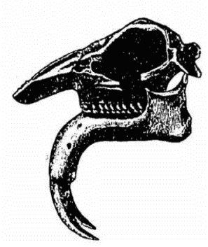

何事に限らず未来を説くのは決して容易ではない。昔から「一寸先は暗」と云ふ通り、次の瞬間に如何なることが起るかは、前以て知ることの出来ぬが常である。多少学術上の根拠を有する天気予報でさへ当らぬことが多い故、世間からは当るも八卦、当らぬも八卦と同様に見做されて居る。されば今日の所では未来の予言は到底普通の人間には出来ぬことで、若し之を為し得る者があつたならば、其者は必ず人間以上の所謂予言者の類でなければならぬ如くに思はれて居る。
然しながら、未来のこととても、総べてが全く予言の出来ぬもののみとは限らぬ。来年の暦に何月何日には日蝕が有つて、何時何分何秒に始まつて、何時何分何秒に終ると明記してあるが、それが必ず確に当る。今年現はれるハレー彗星なども幾十年も前から既に今年現はれるべきことが天文学者には知れてあつて、今後また何十何年目に再び現れ出ると云ふ事までが明かに解つて居る。他の方面に於て予言が総べて不可能なる如くに見ゆるに反し、天体に関してのみ斯く正確に予言の出来るのは何故であるかと云ふに、之は決して特別な秘密がある訳ではなく、たゞ既往に於ける天体の運動を正確に測定し、其の運動を支配する法則を探り求め、之を将来に当て嵌めて、予言するのみである。されば他のこととても、天文学で将来を推測するのと同一の方法によつて考へたならば、多少の予言の出来ぬことはない。我らが今此所に聊か人類の将来に就いて論ずるのは、決して予言者を以て自ら任ずる次第ではなく、単に天文学者が天体を観測し研究するのと同一の態度を取り、生物界の既往の変遷を調べ、それより生物各種の栄枯盛衰を支配する法則を探り求め、之を人類の場合に当て嵌めて、其の将来を推測しやうと試みたに過ぎぬ。天体の運動の簡単なるに反し、生物界に起る現象は極めて複雑であつて、到底数学的に計算は出来ぬから、時を指して予言することは素より出来ぬが、唯その進み行く方向と、終に達すべき終局点とだけは恐らく誤りなく推測し得るであらうと信ずる。
之より先づ、人類が如何にして生存競争場裡に他の動物に打ち勝ち、今日見る如き優勢の位地を占め得るに至つたかを考へ、次に地質学上の各時代に全盛を極めた諸種の動物が、如何にして一時斯かる勢力を得るに至つたか、また何故それが遂に亡び失せたかを調べ、それ等を基として人類の将来に就いて我らの推測する所を順次述べて見やう。
さて人類は他の動物に比して如何なる点が優つて居たので総べて他の動物に打ち勝つて、今日の位地を占め得るに至つたかと考へるに恐らく誰でも直に気の附くことであらうが、それは思考力、推理力の器官なる脳髄の発達せることと運転の自由自在なる手を有することとである。仮に人間の手に屈伸自在の指がなくて、其代りに馬や牛に見る如き蹄が着いてあつたと想像して、それでも人間が今日の位地まで達し得たであらうか、否かと考へれば、人類の進歩に取つて手が如何に欠くべからざる物であつたかゞ直に知れる。手に指がなかつたならば、第一、物が握れぬから如何なる簡単な器械をも使ふ事が出来ぬが、若しも人間に器械を使用する能が無かつたならば、到底他の動物に優るべき目醒ましい働きは出来なかつたに違ひない。人間が他の動物に打ち勝つたのも、文明人が野蛮人を征服したのも全く器械の力に依るのである。人間の外にも幾分かの器械を用ひる動物が全くない訳ではないが人間の如くに一から十まで器械ばかりを使ふものは他にない故、実に「人間は器械を使ふ動物なり」と云ふ定義を下しても差支へはない。また脳髄の方が充分に発達しなかつたと想像すると、此の場合にも人間は決して今日の位地に達し得なかつたに疑ない。凡そ如何なる器械でも、之を用ひるに当つては手を使ふと同時に必ず脳をも使ふもので、器械を造るに当つては更に多く脳を用ひる。脳で工夫した器械を造つて使用して居れば、手はその為に漸々熟練して益々精巧に働き得る様になり、手を働かして経験が積れば脳はそのため更に進歩して前よりも一層よく考へ得る様になり、両方で相助け合うて、両方ともに益々発達する。脳の思考力、推理力が進めば、自分に比して遙に筋肉の強いもの、感覚の敏いもの、爪牙の鋭いものに対しても智力によつて容易に打ち勝つことが出来るが、人類が他の動物に打ち勝つたのも、文明人が野蛮人を征服したのも総べて此の方法に依つたのである。
元来如何なる器官でも突然一足飛びに発達するものではなく、必ず其の履むべき順序を経て漸々進み来るもので、人類の脳なども手と器械とに依つて獲る経験の重なるに随うて発達したのであるが、之と大関係の有るのは言語である。今日の所では言語を有する動物は人間のみである故、或る人が「人は言語を有する動物なり」と云ふ定義を下したのも尤もである。通常言語は口で云ふものの如くに見做されて居るが、実は口は単に言語に必要な音声を発するだけの器官であつて、真に言語を使ふ器官は脳であるから、我々は常に脳で物言うて居ると云ふた方が寧ろ正しい。言を換へれば、言語なるものは脳の働きに使ふ器械であつて、手が種々の器械を用ひて働く如くに、脳は言語を用ひて働くのである。器械も初めは石斧や石棒の如き粗末なものであつたのが、終に自動車やライノタイプなど頗る精巧なものが出来た如く、言語も初めは至つて粗末なものであつたのが、漸々進歩して精巧なものとなり、脳は其の精巧な言語を使うて、益々推理の力を進め智力を増し、何事をもよく工夫して、終に他の諸動物に打ち勝つて今日の優勢なる位地に達したのである。
人類の起りを想像するに、恐らく今日より何百万年か何千万年かの昔に其頃生存して居た猿類の中の或る一種が樹上の生活より地上の生活に移り、後足のみで体を支へ直立して歩み、斯くして自由になつた前足を用ひて簡単な器械を使ひ始め、或は石を拾うて敵に投げ、或は枝を折つて敵を防ぐべき棒となし、或は石を打ち合せ、割れて鋭い刃の生じたものは之を斧または刀として用ひ、小さい片は鏃として矢の先に結び附け、石を打ち合せ或は木を摩り合せて居るとき偶然火を発する事を屡々経験する間には、遂に自由に火を造る方法を覚え、随意に火を用ひ得る様になつた以上は、之によつて土器を焼くことも出来、次には鉱物を熱して青銅、鉄さへも採つて、種々の武器を造り得るまでに進むであらうが、此の程度まで進んだ以上は、最早人類の敵として恐るべきものは一つも無く、自分に危害を加へる獣類は悉く退治し、自分の種属は漸々蕃殖して全世界に拡がり、終に戦と云へば人類相互の戦のみを意味する今日の有様までに進み来つたのであらう。また斯く手を用ひて為ることが進歩する間には、経験の重なるに連れて、脳の働きも速かに発達し、終には困難な無形の事柄をも抽象的に思考するまでに進み来つたのであらう。我々人類は斯くの如く脳と手との働きに依つて、今日占め居る位地までに達したのであるが、さて今後は如何に成り行くであらうか。
「歴史は繰り返す」と云ふ諺がある。之は恐らく時の古今を問はず同じ原因があれば必ず同じ結果が生ずることを云ふたものであらう。然らば或る事の将来を論ずるに当つては、嘗て既往の歴史中に起つた似寄りの事件の成り行きを調べて、参考し比較する事は甚だ必要である。今人類の将来を論ずるに当つても、先づ人類より以前に此の地球上に全盛を極めて居た各種の動物が、終に如何なる運命に遇ふたか、また何故その様な運命に遇ふたかを詳しく研究して参考せねばならぬ。
人類以前に地球上に全盛を極めて居た動物の例を挙げれば、古生代に於ける魚類、両棲類、中生代に於ける爬虫類、第三期に於ける獣類などである。此等は各々その時代に於ては、恰も今日の人類の如くに絶対に優勢なる位地を占めて、仮にも之に敵し得る動物は決して他に無かつた。特に中生代の蜥蜴類の旺盛を極めて居た勢は殆ど想像も及ばぬ程で、近頃発掘せられた化石のみに就いて見ても北アメリカから出たアトラントサウルスといふ蜥蜴などは体の長さが十六間もあつて、今日の最大の鯨よりも更に大きい。こんな動物がうろ／＼と陸上を匍ひ廻つて居たときの実際の様子は如何であつたらうか。また其頃の海の中にはイクチオサウルス、プレシオサウルスなどと名づける鯨のやうな大きな蜥蜴類が無数に游いで居た。また空中には翼を有する蜥蜴類が沢山に飛んで居たが、其の中で、プテラノドンと云ふ種類などは翼を拡げると三間半もあつて、今日最大の飛ぶ鳥なる南米のコンドル鷲に比べて殆ど三倍も大きい。斯くの如く、其の時代に於ては陸上を走るものも、水中を游ぐものも、空中を

中世代の大蜥蜴アトラントサウルス
一時絶対の優勢を占めて向ふ所全く敵なしとも云ふべき有様にあつた此等の動物が、何故に忽ち衰へ亡びるに至つたかは、大に研究すべき問題である。此の問題に就いては、古生物学の書物にも何も論じてなく、生物学者等の間には何の説もない様で、普通には唯これ等の動物よりもなほ一層優つたものが現はれた為に、生存競争に敗れて亡びたのであらうと簡単に思はれて居るが、我らの考へでは此の問題は斯様に簡単に解決せらるべきものではなく、更に深く研究を要する。第一、既に優勢の位地に立つて居ると云ふことは、生存競争上その動物に取つて大に有利な点である故、仮に同等の競争者が現はれたと想像しても、決して容易に負ける理由はない。一種の動物が絶対に優勢の位地を占めて居る以上は、残りの動物は之に比して悉く劣等の位地に立つて居ることは勿論であるが、今まで劣者の位置に立つて居たものの中から或る一種が突然急速力を以て進歩し、今まで絶対に優勢を保つて居たものを追ひ越し、忽ち之を全滅せしめると云ふことは容易に有るべき事でない。山が海となり、海が山となつて天地も覆るかと思ふ様な大変動が地球の表面に起つた場合はいざ知らず、斯かる天変地異が無い以上は、其時の劣者の中から、其時の最優者を忽ち亡ぼすべきほどの力を有するものが現はれやうとは容易に信ぜられぬ。然らば前に述べた如き一時全盛を極めた動物種属が何故に忽ち滅びたかと云ふに、我らの考によれば、其の動物種属自身の内に、自ら滅亡すべき原因が生じて此の原因が内から働くのと、外から攻める敵の力とが相合して遂に之を滅亡せしめたのである。

第三期の巨獣ヂノテリウムの頭骨
凡そ物が亡びるには二通りの原因がある。一は外に在つて外から働く原因で、他は内に生じて内から働く原因である。我国の歴史に就て見ても、平家が亡びて源氏が興つたのは、決して平家が引続き健全に発達して優勢を占め居るべき筈の所へ、源氏が更にそれ以上に優つたものとなつて、競争の結果これを倒したのではない。若しも平家に内から亡びるべき原因が無かつたならば、競争上遙に不利益な位地にあつた源氏が、後より之を追ひ越して倒す望みは到底無かつたであらう。彼の驕れる平家が久しからずして亡びたのは、平家の亡びるべき原因が既に内から働いて、最早危く成りかゝつた所を源氏が外から突き倒した故、恰も内部の朽ちた枯木が些細の風にも倒れる如くに、容易に亡びたのである。常に生存競争の劇しい世の中にあつては、如何に一時優勢を保つた動物でも、内から亡びる原因が働いて、其の運命が傾いて来た場合には、今まで劣等の位地にあつたものの為に、忽ち倒されてしまふことは当然である。中生代に天下を我物顔に横行したイクチオサウルスやプレシオサウルスが僅に一時代限りで滅び失せたのも、第三期の恐るべき猛獣、驚くべき巨象が暫くで全く死に絶えて後に子孫を遺さぬのも、全く平家の亡びたのと同様の理由に基づくのである。
一時絶対の優勢を保ち得た動物種属を内から働いて滅亡せしめた原因は何であるかと云ふに、我らの見る所によれば、何れの場合にても必ず初め其の種属を急に勃興せしめた原因と同一のものである。之は一寸聞くと甚だ不思議に思はれるであらうが、少し詳しく調べると其の理由が明かになつて来る。凡そ何事でも一利あれば必ず一害あるは免れ難い事で、人の伝記などを読んで見ても、同一の性質が其人の長所であると同時に、また短所でもあると云ふやうな文句を往々見るが、動物の有する諸種の性質にも之と同様なことがある。或る動物は体の大きく筋肉の強いことに依つて他の種属に打ち勝ち、或る動物は武器の鋭いことに依つて他の種属に打ち勝ち、其他それ／″＼異なつた方面に他に優れた所があつた為に、優勢の位地に達し得たであらうが、仮に身体が大きく力が強かつた為に他に打ち勝つた動物に就いて見るに、体の大きく力の強いと云ふことは確に生存競争上他の動物に勝つに都合の好い性質ではあるが、また生活に多量の食物を要すること、成長に多くの年月を待たねばならぬこと、蕃殖の遅かるべきこと、働作に敏捷を欠くこと、其他なほ種々の不利益なことが必然に附帯して来る故、一定の度を超えれば、体の大なることは却つて生存競争上に都合が悪くなる訳である。また牙や角の大きく鋭いことは之を用ひて敵を倒すには無論極めて有利な性質であるが、之とても、牙や角だけが単独に発達し得るものではなく、之を載せるための頭骨、顎骨も、之を運用すべき筋肉も、其の筋肉を養ふべき血管も共に発達せざるを得ぬ故、牙や角が大きくなれば、それだけ、其の動物の負担が重くなつて、之も一定の度を超えると、恰も不相当に多くの海陸軍を造つた貧乏国が、武器を維持するために重税を課する結果として、総べて他の方面が疲弊し、終には国全体が衰へざるを得ぬ如くに、やはり生存競争には却つて不適当なものと成つてしまふ。凡そ或る性質を備へたるが為に総べて他の種属に打ち勝つて、絶対に優勢の位置に進んだ動物は、後には更に其の性質を用ひて相互に競争するを免れぬもので、筋力で天下を取つた種属は後には自己の種属内で相互に筋力を以て争ひ、牙で優勢を占めた種属は後には自己の種属内で相互に牙を以て闘ふ故益々体の大きなもの、牙の強いものでなければ生存することが出来ず、斯くして初め其の種属をして他に優らしめた性質は何所までも際限なく進まねば止まぬ有様となるが、前に述べた通り、如何に初め生存競争に都合の好かつた性質でも或る程度を超えると却つて生存競争に不利益なものとなり、且つ身体が或る一定の生活法に適する様に専門的に遠く変化すると総べて他の方面には、それだけ不適当なものと成らざるを得ず、随つてそれだけ融通の利かぬものと成り、終に生存競争上不利益な位地に陥つて、漸次他の種属のために滅されるに至つたのである。
以上述べたことを尚詳しく論ずれば、多くの実例を挙げて証拠立てることが出来るが、斯くては余り専門学の範囲に深入りすることと成る故、此所には略する。たゞ我らの考への要点を述べれば次の如くである。即ち地質学上の各時代に優勢の位地を占めて居た諸種の動物が後に至り忽ち亡び失せたのは、決して単に他の種属のために攻められて敗けた訳ではなく、寧ろ其の亡びる原因が内部に生じたのに因るのである。然して、其の内部に生じた原因と云ふのは、即ち初め其の種属をして総べて他の動物に勝つて優勢の位地に達せしめた原因と同一のものである。シヤミセンガイやオウムガイの様な何所の隅に生きて居るか分らぬ程の微々たる生活を営んで居るものは、却つて古生代から今日まで引続いて細長く生存して居るに反し、一時急に盛になつて、暫くは絶対に優勢を保つて居たやうな動物が、悉く次の時代に滅び失せたと云ふことは、我らが此所に述べた如き原因によると考へるの外には到底説明の仕様は無い様である。
斯くの如く化石学上の例の示す所によると、一時地球の表面に優勢の位地を占めて居た動物種属は、何れも初め其の種属をして他の動物に打ち勝つて、優勢の位地に達せしめた其同じ性質が、やがて却つて禍をなして、その為に悉く亡び失せてしまふたが、さて人類は如何であらうか。人類だけは独り他の動物とは全く違うて、人類をして、今日の優勢なる位地に達せしめた脳と手との力に依り、言語と器械とを使用して、今後も永久限りなく益々栄え行くであらうか。将また他の動物と同一の法則に従うて、嘗ては人類をして他の動物に打ち勝たしめ、文明人をして野蛮人を征服し得せしめた其の脳と手との働きが、やがて却つて禍をなして、人類をして、恰も空に向うて投げた石が降ち来るときの如きパラボラ線を画いて一刻毎に速力を増しつゝ滅亡の運命に向うて進ましめ居る如きことは無いであらうか。
前に述べた通り人類が今日の有様までに進んだのは、全く言語と器械とを用ひて働く脳と手との力に因つたものであるが、此の力の発達に伴うて如何なる事が起つたかと云ふに、凡そ器械を用ひる以上は所有権と云ふものが生じ、財産なるものが現はれ、同時に財産を貸して利子を取る制度も起るが、其の必然の結果として、終に貧富の懸隔が甚だしくなり、富める者は益々富み、貧しきものは益々貧しく、一社会の中に、遊びながら贅沢の極を尽す少数の極富者と、如何に働いても生活に必要な衣食さへも充分に獲られぬ無数の極貧者とを生ずるに至る。西洋諸国では今日既に此有様に達して居るが、世の進むに随ひ此傾向は益々烈しくなるに違ひない。金の有り余る富豪と、生活の為には如何なる恥をも忍ぶ貧民とが並び存すれば、其間に宜しからぬ現象の起るは当然の理で、之のみでも世道の頽廃、人心の堕落の原因としては充分である。
富者の華美な生活を見、金力によつて殆ど何事をも為し得ざることなき有様を目撃する多数の人々が、同じく一生を送るならば我も斯くの如くにして暮したいと思ふは無理ならぬこと故、世間一般にたゞ金銭にのみ重きを置く様になり、如何なる苦しみを忍んでも金銭を溜めやうと決心する事を奮発と名づけ、何等かの方法に依つて金銭を溜め得たことを成功と称し、父兄は行末を思うて子弟に奮発を強ひ、雑誌は成功者の例を挙げて盛に青年を煽動するゆゑ、益々金銭のための競争が劇しくなるが、一人をして富豪ならしめる為には、数万人が貧苦を忍ばざるべからざるは計算上明かである故、総べての奮発者が悉く成功することは到底望むべからざることで、実際には其の多数は何時までもたゞ劇しい競争を続け、苦しみながら遂に一生を終るのである。肉体の慾には何れも際限があるが、金銭に対する慾には際限が無いから、富者は其の生存競争に有利なる地位を利用して、更に富を増さうと努め、貧者は益々之に苦しめられ、終には毎日朝から晩まで牛馬の如くに働いても、生存に必要な食物、衣服さへ充分に獲られぬ程になる。要するに、今後は貧富の懸隔が益々甚だしくなり、一度貧困に陥つたものは如何に奮発しても容易に頭を上げることは出来ず、金銭のための競争が何所までも劇烈になつて、従来の道義や人情を顧みては居られぬ様な世の中に成り行くものと思はねばならぬ。
また人間は何事にも器械を用ひる結果として、生活が次第に自然の状態に遠ざかり、火を点じて、夜も明るくし、炭を焚いて冬も暖くする。更に進んで夏も氷を造り、電気扇を回転せしめて暑を防ぐが、斯く器械の力に依つて天然に反した生活をすると身体は次第に天然に対する抵抗力が減じ、段々懦弱になつて、僅の寒暑に曝されても直に病気に罹るやうになる。西洋人が靴下を脱ぐと風を引くと云うて恐れるのは既に其例である。また火を用ひて食物を煮て食ふ様になつてからは剛い物を噛む歯の力が漸々減じて、歯は弱く且悪くなる。野蛮人に比しては文明人の方が一般に歯が弱く、同じ国の内では下等社会よりも上等社会の方が一般に歯が悪いことは歯医者のよく知る所である。料理の法が進めば胃がそれだけ弱くなつて、終には食時毎にタカヂヤスターゼを飲まねば飯が消化せぬ様な人も生ずる。出産の如きも元来普通な生理的の作用であるから決して困難な筈なく、獣類の牝に出産の際に同僚の助けを求める者のないのは無論のこと、人類でもアフリカやオーストラリヤの土人は姙婦が旅行中に出産する場合には暫時同伴者と離れ、藪蔭で出産を済ませ、傍の小河で幼児を洗うて、直に自分の背に乗せ、早足で同行者に追ひ附いて、平気で旅行を続けるが、本来かく軽便であるべきものが、文明国になると、生死にも関する大事件となり、必ず産婆、看護婦、産科医者の助けを借りなければ産めぬ事に定まり、其上に難産の割合が次第に増して行く。斯く身体が段々弱くなつて、防寒具、避暑具、防湿具、頸巻、手袋、耳覆ひ、呼吸器、塵除け眼鏡、ゼム、清心丹、タカヂヤスターゼ其他種種雑多の物の中、何か一つ欠けても忽ち病に罹るやうに成れば、生命を保つに必要な物の品数が非常に多くなり、それだけ生活費が高くなつて、生活難が度を増し、生存の競争になほ一層の努力を要することに成る。特に葬式に其の日だけ看護婦を傭ひ込んで、車で供をさせる程に虚栄心に満ちた人間が、富豪の贅沢な生活を常に目の前に見て居るのである故、幾らあつても尚その上に金銭の不足を感じ、一にも金銭、二にも金銭と唯それのみを思ひ煩うて一日も安んぜぬ様に成るに違ひない。
生存競争が劇甚となつて、烈しく競争せねば自分の生存が危いと云ふ不安の念が一刻も念頭を離れぬ様になると、無意識的に競争して居たときとは違ひ、唯それだけでも甚だしく神経を刺戟するが、人間が便利或は娯楽のために造る器械も、また烈しく神経を刺戟するもの計りである。今日でも一寸外へ出れば直に電車か汽車に乗るが、其の喧しい響きは聴神経を通じて強く脳の中枢を刺戟する。慣れると余り喧しく感じなくなるが、之は唯その響が意識に入らぬだけで、実際耳と神経と脳との刺戟せられて居ることは毫も減じない。活動写真を見る人は単に画が動く如くに感じて居るが、実際は一秒に十回以上の割で劇烈な光と暗黒とが交る交る眼の網膜と視神経と脳とを刺戟して居るのである。斯く神経系に対する刺戟が多過ぎるために神経は次第に衰弱し、其の働きが過敏となり、病的となつて些細な事をも甚だしく気に掛け、僅なことをも非常に心配し、少しく逆境に立つと忽ち失望落胆し、或は自暴自棄となつて、軽々しく自殺し、若くは重罪を犯すやうになる。今日でも統計の示す所に依ると、精神病者、自殺者、犯罪者の数は一年毎に増して行くが、今後は其の原因が増加するに随ひ、更に一層甚だしくなるものと覚悟せねばならぬ。
また教育が進んで脳の働きが発達すると、万事自身の智力で判断し識別する力が増す故、若しも社会に不条理な制度が存在するときは忽ち之に気が附き、劇しく其の不都合を感じ、其のために不利益な位地に立つて居るものは堪へ難い不平を起すに至る。無智の野蛮時代や半開時代には何様にかして餓ゑず凍えず、安全に暮し得るものは、それで満足して、貧乏な自分の隣りに富裕な人が
野生の動物には生存競争の結果、常に自然淘汰が行はれ、筋肉体力の劣つたもの、感覚の鈍いもの、其他、生存に不適当のものは亡びて、適者のみが生存する故、生存に適する性質は代を追うて僅かづつ発達し、決して退歩することは無いが、人類には、何物とでも交換の出来る貨幣が流通する様に成つた後は、自然淘汰の働きが中絶した。人類に於ても生存競争が劇烈で、敗者は生存が出来ぬのであるから、確に一種の淘汰が行はれて居るには違ひないが、今日人類の生存競争に於て勝敗の定まる標準は必ずしも身体の勝れたこと、精神の優つたことではなく、多くは全く別種の関係から勝敗が決する故、常に極めて劇しい生存競争がありながら、優者のみを生存せしめると云ふ淘汰は起らぬ。身体も健全で智力も相応に発達した者が貧に迫つて自殺することもあれば、病身な愚物が医者と看護婦とを傭ひ得る金銭の力で、無事に生存して子を遺すこともある。立派な人間に育つべき体質の嬰児がたゞ貧家に生れた計りに、栄養不良で夭死することもあれば、両親の何れに似ても碌な者には成りさうもない月足らずの児が、贅沢な定温哺育箱の助けに依つて安全に成長することもある。斯くの如く今日の人類には身体の健全と、精神の優秀とを標準とした淘汰は全く行はれぬが、淘汰が止めば其時まで淘汰の標準であつた点が直に退化し始めるのは、生物学上動かすべからざる確な事実である。暗黒な洞の内に在つて眼の優劣を標準とした自然淘汰が無いと、其の動物の眼は次第に退化する。追ひ掛ける獣類の居ない所に住んで、飛ぶ力の優劣を標準とした自然淘汰が無いと、其鳥の翼は次第に小さく弱くなる。アメリカの大洞内に居る盲魚や、ニユージーランドに産する無翼鳥は斯くして出来たものである。されば人類も肉体及び精神の優劣を標準とした淘汰が行はれぬ結果、両者ともに漸次退化すべきは数の免かれざる所で、今後は必ず著しく退化の現象が現はれるであらう。現に今日でも西洋諸国では既に人類の退化現象の少なからぬに気が附き医者、法律家、社会学者などが集まつて、喧しく之を論じ、其ために専門の機関雑誌をも発行して、之を防止する方法を講じて居るが、淘汰の行はれぬ限りは退化は止むを得ぬ故、到底致し方は無いのである。
以上略述した通り、人類は初め諸動物に打ち勝つ際に、大に役に立つた脳と手との働きが、其後何所までも発達した為に、其の必然の結果、生活が自然の状態に遠ざかつて、身体が弱くなり、貧富の懸隔が甚だしくなつて、生存競争が烈しくなり、神経は衰弱し、不平は増進して、世道人心は益々堕落するの外なきに至つたが、此等は総べて広い意味に於ける退化の現象に属する。今日とても既に世道の廃頽、人心の堕落を歎く人は幾らもあるが、其の原因が人類自身の性質の内部に起つたものである以上は、今後も引き続いて同一の方向に進むであらう。さて斯かる退化の現象が今日以後、更に歩を進めたならば、人類の身体上、精神上、社会上に如何なる変化を生ずるであらうか。之は我々が今から慎重に研究して置くべき大問題である。
先づ生活の困難、人心の堕落が今後身体上に如何なる結果を生ずべきかを考へるに、第一に影響を蒙るのは性慾に関する方面である。生活の費用の高まるに随ひ、結婚して一家を支へ、妻子を養ふことは段々容易でなくなり、相応の資産を造つた後でなければ結婚が出来ぬ所から、自然に晩婚の風が生じ、中年以後まで結婚せぬ者も段々多くなる。然るに性慾は人類自然の肉慾の中で最も力強いもので、青春燃ゆるが如き時期に当つては、到底理性に依つて冷かに制御し得べきものではない。それ故、公に結婚の出来ぬ場合には、何等か他の方法に依つて其の満足を求め、其の結果として裏面の風儀が次第に乱れるは止むを得ぬ。亦女子は身体の構造上、資本を要せずして金銭を儲け得べき方法が備はつてある故、生活の困難な場合、若しくは虚栄心を満足せしむべき金銭の不足を感ずる場合には、暫時肉体を貸して之を補はうとするに至り易い。甚しきに至つては学校の授業料を得んが為に、密かに稼ぐ女学生までも出来る。斯くして公然の結婚に依らずして性慾の満足を得べき簡便な方法が到る所に出来る上は、青年は悉く之に依つて満足を求め得て、晩婚は素より一生独身で暮す男子も多くなり、今日でも西洋諸国では既に、嫁ぐべき相手が無いために拠なく独身で暮す女子が非常に沢山にある。斯様な世の中になれば梅毒、痳病、軟性下疳などの花柳病が忽ち拡がつて止まる所を知らぬであらうが、梅毒は甚しく身体を弱くし特に神経系を犯せば痲痺性痴呆などと云うて、長くても二三年で必ず死ぬ恐ろしい精神病を生ずる。その上、梅毒は必ず子孫へ伝はる故、この病が世の中に蔓延すると、一代毎に一般の健康が衰へるは云ふ迄もない。先年ドイツ国ベルリンの大学で学生中に花柳病に罹つて居ない学生の稀なるを知つて大に愕き、特に講義を開いて花柳病の恐るべきことを学生に説き聞かせた。性慾の発動を講義に依つて停止することが出来たか否かは知らぬが、性慾に基く病が確に世の進むと共に勢を得て益々拡がり行くは疑を容れぬ。西洋人が「開化（Civilization）は梅毒化（Syphilisation）なり」と云ふのは全く実際に的中した言葉である。
また公に結婚する者も、生活難の増すに随ひ、其の目的が一変して、従来の如く清き家庭を造つて、健全なる後継者を産み育てる為ではなく、男は富者の娘を娶つて出世の手掛りと為やうと図り、女も富者に嫁して、生活難の心配なく且つ栄燿に世を送らうとするから、随つて結婚の自然の結果なる姙娠を嫌ひ、あらゆる方法を考へて之を避けやうとする。性慾の満足は家の内外に求めながら、子を育てる面倒を免れやうとする者が増加すれば、一般の産児の数が漸々減少するのは当然のことで、現にフランスの如きは、其ため国力の衰へる虞があるので、種々その救済の方法を講じて居る。また児を産んでも、其の養育を人手に委せて、自身は楽を為やうとする女が多くなると、乳を分泌する性質が退化して、西洋では今日既に児を産んでも乳の出ぬ女の数が年々多く成つて居るが、今後は此の現象も更に進むであらう。
人類の生活が次第に自然の状態に遠ざかるに随ひ、身体が漸々薄弱になり、神経が過敏になることは前にも述べたが、生存の競争が劇しくなるに伴うて、自分の生存が何時危くなるかも知れぬといふ心配が瞬時も念頭を離れぬと、常に不安の念に堪へ得ず、漸々苦悶の状態に陥り、若し何等かの手段に依つて一刻でも圧迫の烈しい現実世界を忘れて、借金取りも鶯の声に聞える夢幻の境に遊ぶことが出来れば、之を無上の快楽と感ずるに至る。酒や煙草が到る所に盛に用ひられるのは其のためである。初めて文明人に接触した野蛮人が、何よりも先づ酒と煙草とを欲しがるのも、恐らく無意識的ながら、器械を用ひて責めて来る文明の圧迫を暫時だけでも忘れたい為であらう。酒も煙草も有毒な成分を含むで居る故、多量に続け用ひると中毒を起す。酒精の中毒によつて震戦性譫妄症に罹り、煙草の中毒によつて視力を鈍衰することは世人の知る如くであるが、更に恐るべきは子孫の体質を害することである。医学上の統計によると精神病者、低能者、体質異常者は殆ど悉く其の父母もしくは祖父母等に酒客を有するものである。然し酒と煙草とは極めて重い税を課して、経済上容易に飲めぬやうにして外部から強制的に防ぐことも出来、また煙草には製造者が如才なく芋の葉や蓮の葉を乾して刻み込むから、其の害毒は或は恐れるに足らぬかも知れぬ。
世の開けぬ中は農産物が其まゝで直接に費消者の手に渡る故、飲食物に混ぜ物が無いが、製造工業が盛になると飲食物も一ヶ所で多量に製造し、一時貯蔵して置くために防腐剤を加へることもあり、また法外の儲を得やうとして、容積重量を増すために種々の物を混ずることもある。酒にサリチル酸を加へ、砂糖、温飩粉に房州砂を混ぜ、醤油にサツカリンを入れることなどは今日既に盛に行はれて居るが、これ等も長い間には少しつつ身体を害せぬとも限らぬ。
また製造工業の発達に伴ひ、人の仕事が益々細かく分業的になつて、身体の働きも一方に偏する様になり、耳を用ひる職業の者は耳のみを過度に用ひ、眼を使ふ職業の者は眼のみを過度に使ひ、其ため各職業に固有の病も出来て来る。其上に職業によつては年中絶えず綿屑を吸ひ込むとか、塩酸の煙を嗅ぐとか、自然の生活には決して無い有害物に触れる故、之によつても身体は漸々、悪くなる。田舎が衰微して都会が盛大になる程、この害の範囲は広くなり、其の結果も著しく現はれる。
以上は主として不自然の生活より起る身体の退化を述べたのであるが、次に智力の進歩に伴うて精神上に如何なる変化が生ずるかと考へるに、教育が進み知識が増せば次第に何事に就いても其の理由を知らうと欲し、且つ自身の判断力に訴へて其の当否を鑑別しやうと試みる様になり、従来たゞ他動的に教へられて其まゝ信じ来つた事に対しても疑を挾む様に成つて来る。之は従来単に、知識上の権威に服従して居たのが、其の支配から脱して独立に考へ様とするのであるから、精神的解放とも云ふべき事で、其の結果として総べての方面に懐疑の念が生ずる。其中で精神上に最も著しい影響を及ぼすのは道徳上に関する懐疑である。尤も金銭の遣り取りに忙しい多数の人々は従来とても、ただ習慣に従うて行動するだけで、道徳上の議論などは丸で眼中に置いて居なかつたし、また今後とても、多数の人々は実際の生存競争に追はれて、此様な問題を考へる暇も無く世を渡るであらうが、少しく学問でもする人は道徳の説く所と目前の事実とを対照して疑を挾まざるを得ぬ様になる。例へば書物には善人は終に栄え、悪人は終に亡びる如くに書いてあるが、実際には貧富の懸隔、生存競争の劇甚のために、善人が亡び悪人が栄える方が却つて多い様に見え、正直に一生懸命に働いて居た者が不意に災難に遇うて悲惨極まる境遇に陥ることもあれば、不正直な横着極まる事をして莫大の財産を造つたものが、自分一代は云ふに及ばず、孫の代まで富み栄えて居る例もある。積善の家が忽ち断絶して、積悪の家に却つて余慶のある事もある。斯様な事実を目前に見ては、道徳とはそも何物であるかとの疑念が起るは当然で、「善は善なるが故に為すべし、悪は悪なるが故に為すべからず」と云ふ如き不得要領な説法には到底承知が出来なくなり、従来の道徳は根柢から改めて吟味せねばならぬとの観念が浮ぶ。一方で理論上道徳に関して疑を抱く者の生ずる間に他方には更に一歩を進めて、実際の処世上、道徳なるものを安く見縊り、自分一身の損得から打算して、生存競争上、道徳に従ふを利とする場合には道徳を尊重し、道徳を破るを利とする場合には道徳を捨てて顧みぬ輩が多数に生ずる。西洋諸国で、他の方面の道徳が甚しく衰へたに拘らず、商業上の道徳が堅く守られて居るのは斯様な動機から起つたことであるから、これを以て他の方面の徳義を測るの標準とすることは出来ぬ。人心が斯かる程度に達した上は、道徳が彼等に対して何の威厳をも保ち得ぬは勿論である。
生存競争が烈しくなれば、目的のために手段を択んでは居られぬ様になり、不正な事も聞き慣れては日常の如くに思はれ、一旦成功さへすれば、世間は其の光輝に暈まされて、如何なる手段に依つたかは忘れて問はぬ。斯かる例が無数に現はれるに随ひ、道徳の価値は益々認められなくなつて、終には過去の時代に存した古物の如くに思はれ、実際の生活には全く度外視せられるに至るやも測り難い。世には往々、今日は旧道徳が破壊せられ、新道徳が未だ定まらぬ過渡時代であるから、世道人心が多少混乱の状態にあるは止むを得ぬと説く人もあるが、以上述べた如くに考へると、所謂新道徳なるものは、何を根柢として何時出来上るものであるか真に心細い次第である。
生活難の増すに随うて、往々宗教の叫び声が一時多くなることもあるが、我らの考へに依れば、之は決して或る人人の論ずる如き信仰の復活と見做すべきものでは無く、ただ競争場裡の不安の念に堪へずして何物にか掴み附いて慰安を求めやうと試みるのであるから、恰も溺れんとする者が浮かんで居る藁にも掴み附かうとするのと同じであつて、無智の爺婆が安心して信仰して居たのに比すると全く趣が違ふ。人が地獄極楽をその儘に信じ得た時代には、宗教は風教の維持にも失意者の慰安にも有効であつたらうが、一旦智力が進んで懐疑の念を生じた者に対しては、到底多くの安心を与へる力はない。特に他人を救ふ前に、先づ自分を救ふべき必要のある今後の宗教家によつて、道徳が幾分でも維持せらるべきことは頗る望が少ない。
斯くて道徳も宗教も、今後は生活難と智力の増進に伴ふ懐疑、不安の念を鎮めることは出来ず、生存競争の方は一刻も休まず追ひ立てる故、人心はたゞ堕落の方向に進むの外に途なきに至るであらう。
人類が社会を形造つて生存して居る以上は、互に力を協せ相助けることが何よりも大切であるが、生活難の加はると共に人心が堕落すると、此事が次第に薄らいで行く。各個人の間の競争が劇しくなると、自分一身の生存を図ることに全力を尽してもなほ不足を感ずる程である故、勢ひ他を顧みることなどは出来なくなり、随つて何事を為るにもたゞ自分一身の利害損得から割り出して計画せざるを得ぬ様になつてしまふ。元来人類の如き協力一致の本能の頗る薄弱なるものには制裁を設けて互に相誡め、協力一致の破れぬやうにする仕組が必要である。昔は道徳、宗教等に依つて多少之を為し得た。然るに今後は貧富の懸隔、知識の増進等に伴ふ利己の私慾主義が勢を得て、宗教道徳は共に衰へるの外はない故、たゞ強制的に働く法律の外には、人類に協力一致の働きを為さしめ得るものは無くなる。斯くなれば世は私慾と法律との競走となり、私慾は巧に法律の空隙を潜り、法網に触れずして大に儲け得べき方法を講究して実行し、之を防ぐ為には更に密なる新法律が造られ、法律の数は限りなく増すであらうが、錠前が改良せられる毎に盗賊の錠前破りも精巧になる如くに、法律が密になれば、それだけ之を潜る術も進歩し、私慾は相変らず総べての方面に盛に働き続けるであらう。
各個人が悉く私慾に依つて働く世の中になれば、協力一致を要する事業は素よりよく行はれる望はない。たとひ協力一致の外形だけは継続しても、其の内容は私慾の集まりと変つてしまふ。例へば団体の自治の如きも、元来は多数の人々に適当と認められ選出された者が衆に代つて議員となるべきに、今後は私慾主義の跋扈するに随ひ、其の位置を利用して儲けやうと思ふ者が、自分の方から候補者と名乗つて盛に運動し、うるさく選挙者に迫り、あらゆる手段を取り、時には兇器を持ち出してまでも、他を排して自分が当選しやうと努める様になるに違ひない。福沢氏が嘗て「世界国尽し」の中に「政体ありて主君なく、天下は天下の天下なり」と謳ふた北米合衆国の人に云はせると、米国は共和政治と云ふ理想的の政体で、各個人は貧富上下の別なく、憲法によつて平等に政治上の権利を与へられて居ると云ふが、今日既に上述の如き有様に進んで居る故、仮に自分がニユーヨーク市の住民になつたと想像すると、自分の実際に有する政治上の権利は、たゞ自分の好まぬ候補者を選むか、棄権するかの二途の中、一つを随意に選び得ると云ふ権利のみに過ぎぬ。されば今後は協力一致を要する働きは漸々困難になり終には殆ど不可能になるやも知れぬ。
智力が進めば道徳に向うて懐疑を挾む様になると同じく、従来の伝説によつて存する社会の制度に対しても、単に盲目的に服従して居らぬ様になり、批評的の態度を取つて之に望むから、不条理なりと思ふことには反抗の念を起さゞるを得ない。単に祖先の御蔭によつて、愚劣な子孫が何時までも社会の上位を占め得る印度の世襲的階級制度などに対しては、第一に斯かる反抗の念が起るであらうが、之れが劇しく蔓つて現在の制度を倒さうと試みる者が盛に現はれては、社会の秩序安寧が破れる憂がある故、国を治める局に当る者が力を極めて之を押へやうとするのは無理もない。然しながら斯かる思想は外部から圧して発表させぬ様にすることは出来るが、心の中に思ふことまでを防止することは出来ぬ故、今後は智力の進むに随ひ、なほ一般に拡まるは免かれぬであらう。「泣く児と地頭には勝たれぬ」と云ふ諺も有つて、時の強者に反抗するは損である故、大抵の人は自身の利害から考へて、容易に公には名乗らぬが、西洋諸国では今日既に之に類する念は殆ど総べての人の内心に存する様に見受ける。なほ此等に就いては論ずべき事が沢山にあるが、余り長く成るから止める。
人類の将来などと云ふ問題は到底四十頁や五十頁で詳に論ぜられるものではないから、此所には素より極めて大体の筋道だけを述べたに過ぎぬが、之に依つても人類が今如何なる方向に進みつゝあるかと云ふ事だけは多少明かに知る事が出来やう。即ち人類は其始め脳と手との力に依つて他の動物に打ち勝ち、絶対に優勢な位地を占めることを得たが、其の脳と手との働きの進んだ結果、今後は貧富の懸隔が甚しくなり、生活の困難が増し、身体は退化し、神経は過敏となり、不平懐疑の念が進み、私慾のみが盛になつて、協力一致の働きが出来なく成るべき運命を有するに至つたのである。人類の場合に於ても、初め生存競争上最も有効であつた其の同じ性質が限りなく発達して、後には却て禍をなして、今後は滅亡の方向に進むの外なくなつたのであるから、彼の中世代のアトラントサウルスが初め他の動物に勝つ際に有効であつた体力が過度に発達し、終にはその為敏捷を欠いて滅亡したのと全く同一の径路を進みつつあると推測するの外はない。されば其の終局も地質学上の各時代に一時全盛を極めて居た他の諸動物と同じく、恐らくは次の時代までに
斯様に考へて見ると、今日の人類は恰も不治の病の初期に罹つて居る有様で、各民族は未だ軽いながらも到底全快の見込みのない不治の病人に比較すべきものである。一個人が不治の病の初期に罹つた場合には、他事を投げ擲つて安楽に静養する事も出来るが、地球の表面に於ける各民族は常に互に睨み合うて、僅の隙でもあらば相倒さうと待つて居るのであるから、専ら病を養ふのみに掛かつては居られぬ。必ず外に向うては武備を固めて敵の侮を防ぎ、内は出来るだけの方法を講じて一刻でも病勢の進むことを止めて寿命を長くすることを務めねばならぬ。今後に於ける各民族間の競争は恰も不治の病人が相闘うて居る様なもの故、武備の劣つたものが先づ敗ける憂があるは明であると同時に、病気の急に進んだ者も忽ち敵に倒されるは疑ない。されば各民族ともに全力を尽して、此の両方面に於て常に他の民族に優るやうに務めることが必要である。
小医は人を医し、大医は国を医すと云ふが、若し人類の不治の病なる世道の廃頽を医し得る者があつたならば、これこそ大医の更に大なるものである。世は澆季なりとは三千年の昔から絶えず人の云ひ来つたことであるが、其間に之を憂へて、世を救はうと志した人は素より多数に有つた。その中で死後の崇拝者に担がれて今日まで名を伝へられたものにはキリスト、孔子などがあるが、此等の人々の教へた事は根本は極めて簡単で且つ同一である。即ち「己の欲する所、之を人に施せ」若しくは「己の欲せざる所、之を人に施す勿れ」と云ふことに帰着するが、此の訓へは実行が出来さへすれば、世道の廃頽も人心の堕落も即座に撤回することが出来て、世は忽ち極楽浄土と成る筈であるから極めて結構であるが、惜しいかな今の世の中では実行が到底覚束ない。今日まで之に依つて世道人心の堕落を防ぎ得なかつたことは、過去の歴史の証明する通りであるが、今後とても同様である。生存競争の劇烈な世の中では、一刻でも他に先んじて此の訓へに従ふた者は忽ち取り返しの附かぬ苦境に陥る虞がある故、一民族内の総べての個人が、一、二、三の号令と共に悉く打ち揃うて此の訓へを守る様になる時の外は到底その実行を望むことは出来ぬ。
根本的の治療法が無いとすれば、其他の方法を求めるの外に道はないが、他の方法は今日既に文明諸国に沢山に行はれて居る。養育院、感化院、孤児院、慈善会、出獄者保護会、安価食物供給所、無銭宿泊所、労働者養老金、貧困者慰問其他種々の救済法は皆この類である。此等は病の原因を除くのではなく単に現れた症状に対する療法である故、素より姑息なるを免れぬが、適当に行はれゝば、其だけの効は充分にあるべき筈である。時としてはトラスト征伐、累進的相続税法等の稍々外科的治療に類する方法が案出せられることもある。また身体の退化を防ぐためには、米国の或る州で現に行うて居る如くに、遺伝性の悪病患者には強制的に生殖を禁ずることも出来る。之に就て人権云々と論ずる人もあるが、斯かる論は足の先が壊疽に罹つて腐り始めたときに細胞権を云々して患部を切断することを躊躇するのと同様な迂論である。人類の過去に鑑み将来を慮れば、前に挙げた如き諸種の救済法は何れも今後益々奨励して出来得る限り協力一致の精神を失はぬやうに努めねばならぬ。これが、軍備の充実と共に、他の民族の間に介在して他の民族に敗けぬための唯一の手段である。
終りになほ一言したいことがある。我等は一昨年の一月中央公論紙上に「所謂文明の弊の源」と題する一篇を掲げたが、其後或る人から斯様な論は読者をして悲観に陥らしめる患はないかとの注意を受けた。今此所に述べたことに対しても或は同様の懸念をする人が無いとも限らぬが、我等は断じて左様な心配は無用であると考へるのである。
人間には一定の寿命があつて早晩死なねばならぬことは、誰も承知して居らぬものはないが、其のために悲観に陥つたと云ふ人は嘗て聞かぬ。また此の地球は其の始め火の塊であつたのが、漸々冷却して固形の地殻が生じ、凹んだ所へ水が溜り、其の後諸種の生物が生じて、今日の有様までに進み来つた。今後は更に冷却して今日の月に見る如く、水は凍つて氷となり、土は凍つて石となり、空気も凍つて液体となり、更に固形体となるであらうが、斯くなつては生物は到底生活は出来ぬ故、今見る如き生物は其前に総べて消え失せて趾を留めぬであらうとは、地球を論じた書物には悉く明記してある。また太陽と若干の稍々大きな遊星と無数の小遊星とより成る太陽系なるものも、其の初めは今日望遠鏡で実際幾つも見える如き星雲であつたのが、漸次凝固して今日の姿までに成つたのであるから、今後もなほ変化し続けるべきものである。其の上、太陽はこれに附属する無数の星と共にヘルクレス星座の方へ非常な速力で進みつゝあるとのこと故、終には如何に成り行くか分らぬ。年々歳々何の変化も無い様に思ふのは、人の命が短かいために変化を知るべき時間が無いからで、恰も大きな円の周辺の一小部が直線と異ならぬのと同じ理である。我等が此所に述べたのは、たゞ人類は脳と手との働きの進んだ結果、今日既に滅亡の方向に進みつゝある故、地球が冷却して生物が全滅すべき時期を待たず、それより遙に前に滅び失せるであらうと予言したのみである故、従来人の云ひ来つたことに比して期限の少しく違ふ外には余り多く異つて居らぬ。盛者必滅とは常に人の唱へ来つたことで、始めあるもの必ず終りあるは、これ生滅の法である。天長く地久しくとか、天地無窮とか、終り無き世とか云ふのは梨子を「有りの実」と唱び硯箱を「当り箱」と名づけるのと同じく縁喜を祝ふ仮の言葉で、数日の後には必ず枯れるに定まつた松の切り枝を立てて常磐の栄を願ふ徴しとするのと同じ心持で常に唱へて居るに過ぎぬ。
総じて、来るか来ぬか分らぬ危害は、全く来ないものと見做し、来ることは確であつても、其の来る時の定まらぬ危害は当分は来ぬものと見做して、気に掛けずに生活して居ることが健康な人の常態である。汽車に乗つて旅行すれば何時衝突して顛覆せぬとも限らぬが、乗つてから降りるまで絶えずこれを心配して居る者は一人もない。また人間は老少不定と云うて何時死ぬか分らぬものであるが、毎日この事を考へて悲観し続ける者は一人もない。斯様なことを常に憂ひて暮すのはたゞ幽鬱性の精神病患者のみである。されば万一この文を読んで悲観に傾く人があつたならば、其の人は已に現時流行の神経衰弱症に罹つて居ると診断せざるを得ぬ故、我等は其の人に向うて、病勢の募らぬ内に速に療養に取り掛ることを切に勧告する。
（明治四十二年十一月）